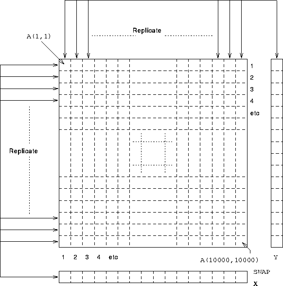

Consider the Gaussian Elimination kernel:
...
DO j = i+1, n
A(j,i) = A(j,i)/Swap(i)
A(j,i+1:n) = A(j,i+1:n) - A(j,i)*Swap(i+1:n)
Y(j) = Y(j) - A(j,i)*Temp
END DO
Want to minimise communications in loop.
Y(k) is always used in the same statement as A(k,i). This implies that Y should be aligned with the first dimension of A. In order that the value of i is unimportant Y(k) should be local to A(k,:) in other words a copy of Y should be aligned to every column of A.
!HPF$ ALIGN Y(:) WITH A(:,*)
! Y aligned with each col of A
A similar argument to above except that SWAP(k) should be local to A(i,k), ie SWAP should be aligned with the second dimension of A. In order that the value of i is unimportant SWAP(k) should be local to A(:,k), in other words a copy of Y should be aligned to every row of A.
!HPF$ ALIGN Swap(:) WITH A(*,:)
! Swap aligned with each row of A
There is no advantage in using BLOCK distribution, calculation of a particular element does not use that elements neighbours in the calculation, it is therefore safe to balance the load by using CYCLIC distribution.
!HPF$ DISTRIBUTE A(CYCLIC,CYCLIC) ! onto default grid
See Figure 32 for a visualisation of the relative alignments.

Figure 32: Visualisation of 2D Gaussian Elimination
Now try this question